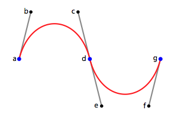
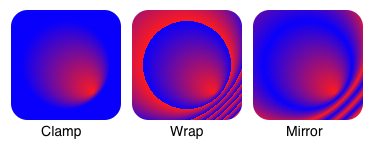
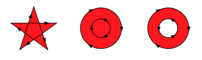
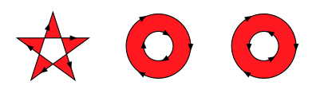
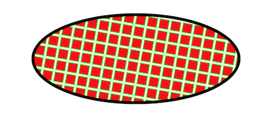

Vector graphics are scalable, resolution-independent graphics that you can use in your UI. They are defined by mathematical equations rather than pixelsThe smallest unit in a computer image. Pixel size depends on your screen resolution. Pixel lighting is calculated at every screen pixel. More info
See in Glossary, which allows them to maintain their quality at any size.
You can import vector graphics to use in your UI.
When you import a vector image, set its Generated Asset Type to UI Toolkit Vector Image in the InspectorA Unity window that displays information about the currently selected GameObject, asset or project settings, allowing you to inspect and edit the values. More info
See in Glossary to get the best results. This creates a specialized asset designed exclusively for use within UI Toolkit, such as in the UI Builder or for runtime UI.
Alternately, you can set its Generated Asset Type to Texture2D for use in other contexts.
For more information, refer to Vector images import settings and Set background image.
When you work with vector graphics, be aware of the following limitations:
Avoid starting Unity with the -no-graphics command-line argument, as this might prevent SVG vector images from importing correctly.
The SVG importer supports a subset of the SVG 1.1 specification. The following features aren’t currently supported:
You can create and manipulate vector graphics with C# scriptsA piece of code that allows you to create your own Components, trigger game events, modify Component properties over time and respond to user input in any way you like. More info
See in Glossary in your UI. Unity provides a set of classes and methods that let you:
There are two main kind of drawable instances: paths and shapes.
Paths are vector shapes defined by a sequence of cubic Bézier curves, grouped into a BezierContour. Each contour consists of an array of path segments and a flag indicating whether the contour is closed. You can use these to create complex, continuous curves for your UI graphics.
Each path segment specifies a start point and two control points. The next segment’s start point continues the curve, allowing you to chain multiple segments for smooth, continuous shapes. You need at least two segments for a valid contour.
For example, consider this path:

To create a path, define a list of segments and specify whether to close the contour. You can then assign stroke and fill properties to style the path as needed.
var a = new Vector2(0, 0);
var b = new Vector2(100, 0);
var c = new Vector2(100, 100);
var d = new Vector2(0, 100);
var e = new Vector2(50, 50);
var f = new Vector2(150, 50);
var g = new Vector2(200, 0);
var segments = new BezierPathSegment[] {
new BezierPathSegment() { P0 = a, P1 = b, P2 = c },
new BezierPathSegment() { P0 = d, P1 = e, P2 = f },
new BezierPathSegment() { P0 = g }
};
var path = new Shape()
{
Contours = new BezierContour[]
{
new BezierContour()
{
Segments = segments,
Closed = true
}
},
PathProps = new PathProperties()
{
Stroke = new Stroke() { Color = Color.red, HalfThickness = 1.0f }
}
};
When you define a BezierContour with Closed = true, the contour connects the last path segment to the first path segment. The last path segment uses its P1 and P2 values as control points.
Shapes are similar to paths, but can contain multiple contours and support filling. You can fill shapes with solid colors, textures, or gradients, and apply transformations to the fill. This allows you to create complex, filled vector graphics for your UI.
You can use different fill types:
Gradient fills let you blend multiple colors together, either in a straight line (linear) or radiating from a point (radial). You define a gradient by specifying a type and a series of color stops, each with a color and a percentage along the gradient.
For example, you can create a linear gradient that transitions from blue to red to yellow by defining stops at 0%, 50%, and 100%:
var gradient = new GradientFill()
{
Type = GradientFillType.Linear,
Stops = new GradientStop[] {
new GradientStop() { Color = Color.blue, StopPercentage = 0.0f },
new GradientStop() { Color = Color.red, StopPercentage = 0.5f },
new GradientStop() { Color = Color.yellow, StopPercentage = 1.0f }
}
};

The gradient addressing modes define how Unity displays the color when the gradient coordinates fall outside of the range, as illustrated here:
The fill mode determines how the interior of complex shapes and holes are calculated. The main fill modes are:
NonZero: Determines whether a point is inside a shape by counting how many times the path contours wind around the point. If the result is nonzero, you consider the point inside. The direction of each contour (clockwise or counterclockwise) affects the result.

OddEven: Counts how many times a horizontal line from the point crosses the shape’s contours. If the number of crossings is odd, the point is inside; if even, it’s outside. This mode is often used for shapes with holes.

Choose the fill mode that best matches the desired appearance of your vector shapes, especially when working with overlapping paths or holes.
The SceneNode class includes a Clipper property that allows you to clip the contents of a node with a shape.

The following code example creates an ellipse that clips a pattern of repeating squares:
// Create an ellipse shape to use as the clipper
var ellipseShape = new Shape();
VectorUtils.MakeEllipseShape(ellipseShape, new Vector2(0, 0), 50, 100);
var ellipseClipper = new SceneNode
{
Shapes = new List<Shape> { ellipseShape }
};
// Create a pattern for clipping, for example, repeating squares
var squaresPattern = new SceneNode
{
Shapes = new List<Shape>() // Add your fill pattern here
};
// Create a SceneNode that applies the clipper to its children
var clippedNode = new SceneNode
{
Children = new List<SceneNode> { squaresPattern },
Clipper = ellipseClipper
};
Note: Only use shapes as clippers. The clipping process ignores any strokes that you define on the clipper shape. You can clip any combination of shapes and strokes as content.
Warning: Clipping can be computationally expensive. While clipping simple shapes with a simple clipper is usually efficient, using complex shapes or clippers might significantly impact performance.
To render vector graphics elements on screen, first get a tessellated (triangulated) version of the sceneA Scene contains the environments and menus of your game. Think of each unique Scene file as a unique level. In each Scene, you place your environments, obstacles, and decorations, essentially designing and building your game in pieces. More info
See in Glossary. When you have a VectorScene instance set up, you can tessellate it with the following VectorUtils method:
var geometry = VectorUtils.TessellateScene(
scene,
new VectorUtils.TessellationOptions()
{
StepDistance = 10.0f,
MaxCordDeviation = 0.1f,
MaxTanAngleDeviation= 0.1f
});
Note: You must specify maxTanAngleDeviation in radians.
To disable the maxCordDeviation constraint, set it to float.MaxValue.
To disable the maxTanAngleDeviation constraint, set it to Mathf.PI/2.0f.
Disabling the constraints makes the tessellation faster, but might generate more vertices.
The resulting list of Geometry objects contains all the vertices and accompanying information required to render the scene properly.
If the scene has any textures or gradients, you must generate a texture atlas and fill the UVs of the geometry. These methods are part of the VectorUtils class:
var atlas = VectorUtils.GenerateAtlasAndFillUVs(geoms, 16);
The GenerateAtlas method is an expensive operation, so cache the resulting Texture2D object whenever possible. You only need to regenerate the atlas when a texture or gradient changes inside the scene.
When vertices change inside the geometry, call the FillUVs method, which is cheap.
You can render the geometry in several ways. For example, you can render the geometry by:
Mesh assetSprite assetFor any of these methods, use the provided materials to draw the tessellated vector graphics content.
To fill a meshThe main graphics primitive of Unity. Meshes make up a large part of your 3D worlds. Unity supports triangulated or Quadrangulated polygon meshes. Nurbs, Nurms, Subdiv surfaces must be converted to polygons. More info
See in Glossary asset, use the following VectorUtils method:
var mesh = new Mesh();
VectorUtils.FillMesh(
mesh,
geoms,
100.0f, // svgPixelsPerUnit
false); // flipYAxis
To build a sprite asset, use the following VectorUtils method:
var sprite = VectorUtils.BuildSprite(
geoms,
100.0f, // svgPixelsPerUnit
VectorUtils.Alignment.Center, // alignment
Vector2.zero, // pivot
16, // gradient resolution
false); // flipYAxis
To render a sprite to a Texture2D, use the following VectorUtils method:
var tex = VectorUtils.RenderSpriteToTexture2D(
sprite, // The sprite to draw
256, 256, // The texture dimensions
null, // The material to use ("Unlit_Vector" or "Unlit_VectorGradient")
1); // The number of samples per pixel
To render the generated sprite using immediate mode GL commands, use the RenderSprite method in the VectorUtils class to draw the sprite into a unit square (a box between 0 and 1 in both X and Y directions):
// Or "Hidden/VectorGraphics/VectorGradient" for gradients
var mat = new Material(Shader.Find("Hidden/VectorGraphics/Vector"));
VectorUtils.RenderSprite(
sprite, // The sprite to draw
mat); // The material to use ("Unlit_Vector" or "Unlit_VectorGradient")